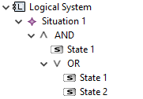

A Situation is defined by a predicate over States of the System, e.g. Situation A is implied by System Component 1 in State B AND System Component 2 in State C or D. Situations and their associated predicate can be created under Components:

Situation Expression tables allow to textually edit the boolean expression of Situations:
Situation Expression tables can be created on Components. The columns of the table are the Situations owned by that component or its subcomponent. The rows of the table are the states/modes of the Component and its subcomponents.
The cells in this table cannot be edited directly, but via the cell's context menu: Change Expression... This will open a dialog where boolean expressions can be entered. The literals of the expression are entered by pressing Ctrl+Space, and selecting a State. The proposed States/Modes are the States of the Statemachine of the cell's row. The recognised keywords are AND, OR, NOT. Use parentheses '(' and ')' to override operator precedence:

The complete expression for a Situation is then the combined AND of the subexpressions of each row:

Situations with expressions that do not adhere to this syntactic subset of expressions will not be shown in the table.